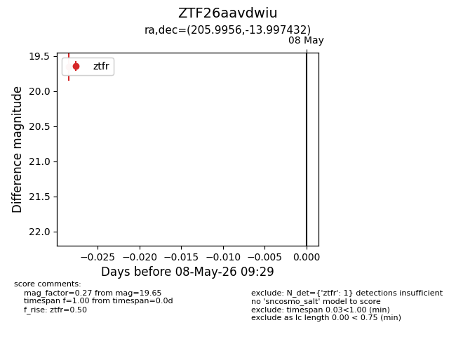
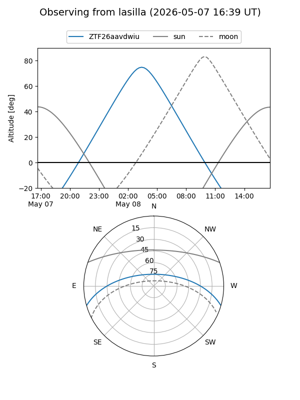
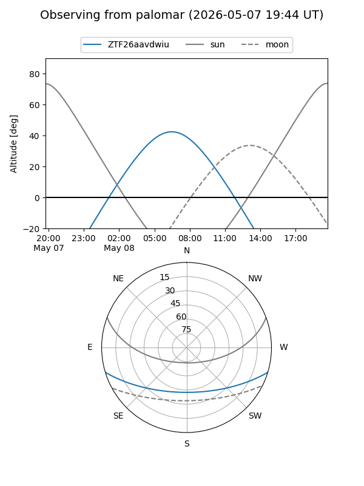

ZTF26aavdwiu
Target ZTF26aavdwiu at 2026-05-08 09:31
Aliases and brokers:
FINK: link
Lasair: link
ALeRCE: link
alt names
ZTF26aavdwiu (ztf,fink_ztf)
Coordinates:
equatorial (ra, dec) = 205.9956,-13.99743
equatorial (HMS+DMS) = 13:43:58.95,-13:59:50.76
galactic (l, b) = (321.7760,+46.94272)
Flags:
Photometry:
last ztfr=19.65
1 ztfr detections
Lightcurve

Visibility


Additional plots